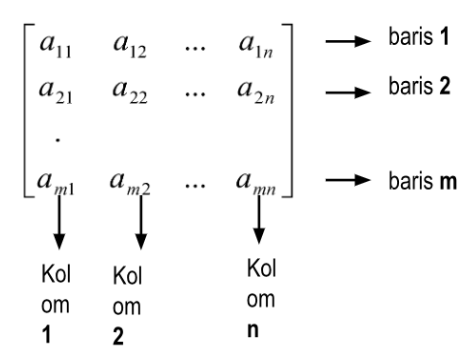
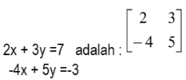

Aljabar Linear
Materi
- Pengertian Dan Notasi Matriks
- Pengertian
- banyak baris
- banyak kolom
- elemen-elemen baris ke-1
- elemen-elemen kolom ke-3
- a3.4
- a1.3
- banyak baris: 3 buah
- banya kolom: 5 buah
- elemen-elemen baris ke-1: 1,4,6,-3,8
- elemen-elemen kolom ke-3: 6,9,7
- a3.4 = elemen baris ke-3 kolom ke-4 = 5
- a1.3 = elemen baris ke-1 kolom ke-3 = 6
- elemen-2 = a21
- elemen 8 = 8a32
- Ordo Matriks
- Jenis-jenis Matriks
- Matriks Nol
- Matriks Baris
- Matriks Kolom
- Matriks Bujur Sangkar/Matriks Persegi
- Matriks Diagonal
- Matriks Satuan/Matriks Identitas
- Matriks Skalar
- Matriks Segitiga Atas
- Matriks Segitigas Bawah
- Matriks Koefisien
Matriks adalah susunan bilangan berbentuk persegi panjang yang diatur berdasarkan baris dan kolom yang ditulis diantara tanda kurung ( ) atau [ ] atau || ||. Susunan horizontal disebut dengan baris sedangkan susunan vertikal disebut dengan kolom.
Bentuk umum matriks:

a^mn adalah elemen atau unsur matriks yang terletak pada baris ke-m dankolom ke-n Nama matriks ditulis dengan menggunakan huruf besar A,B, P, Q, dsb . Sedangkan Unsur/elemen-elemen suatu matriks dengan huruf kecil sesuai nama matriks dengan indeks sesuai letak elemennya, seperti a11, a12, ...
Contoh 1: Diketahui matriks A=

Tentukan:
Jawab:
Contoh 2: Diketahui

Tentukan letak elemen-2 dan 8!
Jawab:
Yaitu banyaknya baris dan kolom yang menyatakan suatu matriks. Am*n artinya matriks A berordo m x n yaitu banyaknya baris m buah dan banyaknya kolom n buah.
Contoh: Diketahui P =

Tentukan ordo matriks P dan Q
Jawab: Ordo matriks P = 2 x 4 atau P 2 x4; Ordo matriks Q = 3 x 2 atau Q2 x3
Yaitu matriks yang setiap elemennya nol.
Contoh:

Yaitu matriks yang hanya mempunyai satu baris
Contoh:

Yaitu matriks yang hanya mempunyai satu kolom.
Contoh:

Yaitu suatu matriks yang jumlah baris dan kolomnya sama. Ordo matriks n x n sering disingkat dengan n saja.
Contoh

Yaitu matriks persegi yang semua elemennya nol, kecuali elemen-elemen diagonal utamanya.
Contoh:

Yaitu matriks persegi yang semua elemen diagonal utamanya satu, dan elemen lainnya nol.
Contoh:

Yaitu matriks persegi yang semua elemen pada diagonal utamanya sama, tetapi bukan nol dan semua elemen lainnya nol.
Contoh:

Yaitu matriks yang semua elemen di bawah diagonal utamanya nol.
Contoh:

Yaitu matriks yang semua elemen di atas diagonal utamanya nol.
Contoh:

Yaitu matriks yang semua elemennya merupakan koefisien-keofisien dari suatu sistem persamaan linear.
Contoh 1: Matriks koefisien dari sistem persamaan liniear
Contoh 2: Matriks koefisien dari sistem persamaan liniear